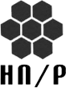

{kind=link}
<~ charlas
Latin America Cyber-Crime Evolution
Jorge Mieres
Descripción general de las actividades relacionadas el ciber-crimen, exponiendo una lista importante de crimeware desarrollado en la región bajo un orden cronológico coherente, que subraya el impacto negativo que el malware tiene en la región y, entre otras cosas, cuáles son los patrones que interconectan el ciclo de propagación y sus campañas.
Seguridad en comunicaciones móviles GSM/GPRS/3G
Fernando Corvalán
Provocadora visión de la falsa sensación de seguridad y zona de confort en la utilización de redes para móviles GSM, GPRS y 3G. Se mostrarán métodos de ataque, análisis de protocolos y algoritmos de cifrado.

Exploiting Mobile Safari
Felipe Manzano
Se presentará un método de explotación para Mobile Safari en iOS 7.1.2. Mediante el encadenamiento de dos vulnerabilidades que permite detectar el objetivo al vuelo, elegir un payload acorde y bypassear ASLR, DEP y Code Signing. Funciona en iOS 7.1.2 e inferiores en iDevices de 32 bits.
Proyecto ODILA
Marcelo Temperini
Maximiliano Macedo
ODILA (Observatorio Latinoamericano de Delitos Informáticos) es un proyecto que busca construir un espacio de investigación y trabajo en materia de delitos informáticos, relevando y recolectando información sobre casos ocurridos en Latinoamérica, con el fin de generar, sistematizar y difundir información sobre la realidad de esta problemática.

Certificate Pinning: ¿tenemos el c...ertificado roto?
Cristian Borghello
Se analizarán las diferentes aproximaciones existentes para validar la cadena de certificación de un sitio web "seguro" y cómo terceros nos pueden romper el c...ertificado para espiarnos.
Aventuras y Desventuras en Investigación de Delitos Informáticos
Ezequiel Sallis · Federico Marchetti
Panorama de los desafíos que un investigador afronta a la hora de realizar su trabajo, no
solo desde los aspectos técnicos, sino también desde un plano jurídico y procesal.
A cargo de expertos del Área de Cibercrimen de la Policía Metropolitana de Ciudad
Autónoma de Buenos Aires.
Mobile Apps and How to Pentest Them
Gustavo Sorondo
A diario las personas utilizan aplicaciones en sus dispositivos móviles para acceder a información o almacenarla. La charla explicará las tareas involucradas en un proyecto de testing de una Aplicación Mobile (Android), desde la lógica de la aplicación a reversear el código y modificarlo.
Hackers University
Federico Pacheco
La palabra "hacker" se utiliza en diversos contextos, representando algo que muchos no
saben bien qué significa. Los medios de comunicación colaboran fuertemente con la
desinformación.
En esta charla analizaremos cómo se convierte alguien en hacker,
si es que tal cosa es posible, y cómo se vincula la educación con la seguridad
informática.
Hacking Wall Street
Juan Braña · Alexis Sarghel
Desde 2009 un 50-70% de las transacciones bursátiles de EEUU se realizan a través de algoritmos matemáticos y computacionales sin supervisión humana. Esta charla brindará una introducción al Trading Algorítmico y de Alta Frecuencia, su situación en Argentina y el mundo. Se mostrarán ataques y metodologías para explotar esta tecnología, y una introducción al protocolo FIX y sus posibles vulnerabilidades.
Do you know who's watching you?: An in-depth examination of IP cameras attack surface
Nahuel Riva · Francisco Falcón
Se expondrán los resultados de una investigación en la que se detectaron y explotaron numerosas vulnerabilidades en 28 modelos diferentes de cámaras IP de vigilancia.
';-- workshops
LOCKPICKING
Infobyte Staff
Desafíos y retos de apertura de cerraduras. El lockpicking es el arte de abrir candados y cerraduras mediante el análisis y la manipulación del dispositivo, sin su llave original.
VULNERABILIDADES Y OTRAS YERBAS
Guido Macchi · Gustavo Grieco · Exequiel Rivas
Se discutirá cómo encontrar vulnerabilidades en aplicaciones y leaks de información confidencial.
GESTIÓN DE VULNERABILIDADES EXITOSA, ¿MITO O REALIDAD?
Hernán Pacin
Recomendaciones para implementar un Programa de Gestión de Vulnerabilidades, definir rol de responsables y reducir el riesgo al que se expone la información.
BITCOIN IN DEPTH: A CRYPTOGRAPHYCAL JOURNEY
Maximiliano Cañellas
Se presentarán funciones y algoritmos criptográficos utilizados en el protocolo Bitcoin, desde la generación de wallets hasta el funcionamiento de la blockchain y transacciones.
INTRODUCCIÓN AL ANÁLISIS Y EMULACIÓN DE FIRMWARE
Fernando Catoira
Metodologías utilizadas durante el análisis de firmware en búsqueda de vulnerabilidades. Demo en vivo mostrando técnicas de descompresión, emulación y auditoría de un firmware.
MALWARE INTELLIGENCE FOR RESEARCH
Jorge Mieres
Inteligencia del malware aplicada a investigación. Se expondrán una serie de tips fusionando análisis de código malicioso, inteligencia e investigación.
~$ trainings
INTRODUCCIÓN A ETHICAL HACKING Y PENETRATION TEST
Cristian Borghello
Resumen
Un análisis de seguridad consiste en tratar de determinar lo que un intruso puede ver o hacer en un sistema o red, y qué puede hacer con esa información. Este curso está orientado a conocer los principales modelos de análisis de seguridad existentes y aborda la forma de realizarlos manualmente o mediante el uso de herramientas.
Público Objetivo
Administradores y responsables de seguridad así como a cualquier persona comprometida con el análisis interno o externo de seguridad en una organización.
Requisitos Previos
Conocimiento básico sobre Seguridad de la Información y Networking.
Temario
Ethical Hacking. Hacking vs Cracking. NDA y otros contratos. Conceptos introductorios. Posicionamiento para realizar un análisis. Tipos de análisis. Ingeniería Social. Ataques pasivos vs activos. Reconocimiento. Exploración. Scanning. Fingerprinting. Web Crawling. Anonimizadores. Google Hacking. Enumeración. Explotación de vulnerabilidades. Acceso a sistemas. Man in the Middle. Análisis de vulnerabilidades. Ataques de inyección. Confección de reportes (técnico y gerencial).
Duración: 8 hs
CRIPTOGRAFÍA PRÁCTICA APLICADA
Diego G. Bruno
Javier Antúnez
Resumen
Conceptos teóricos que fundamentan el uso práctico de la criptografía. Diferencias entre la criptografía simétrica y asimétrica. Funcionamiento y utilidad de las funciones de hash y firma digital. Estructura y estándares asociados a la infraestructura de clave pública (PKI). Formatos de archivos y herramientas de manipulación de certificados. Principales protocolos que utilizan criptografía en su implementación. Herramientas de criptografía que pueden ser utilizadas en las organizaciones.
Público Objetivo
Arquitectos de seguridad, analistas de seguridad, administradores de seguridad, administradores de redes y sistemas, desarrolladores, curiosos y apasionados de la seguridad.
Temario
Algoritmos y operaciones básicas. Algoritmos simétricos y asimétricos. MAC, hashes y firmas digitales. Infraestructura de clave pública. Ataques criptográficos. Estándares y protocolos. Casos de uso aplicados. Ejercicio integrador.
Duración: 8 hs
/? speakers
Senior Malware & Cybercrime Researcher
Especialista en Seguridad Informática
Investigador en Seguridad Informática
Abogado especializado en Derecho Informático

Analista en Informática Aplicada
Consultor en Seguridad de la Información
Security Consultant
Especialista en Cibercrimen
Security Consultant & Researcher
Especialista en Seguridad de la Información
Especialista en Inteligencia Artificial
Especialista en FreeBSD

Security Expert
Security Expert
Entrepreneur · Developer
Ingeniero en Sistemas de Computación
Ingeniero en Sistemas de Información
Consultor en Seguridad Informática
Consultor en Seguridad Informática
.admins
Federico Massa
@fgmassa
Consultor de seguridad informática especializado en Ethical Hacking con experiencia en proyectos nacionales e internacionales. Desarrollador de VScan (presentado en BlackHat 2013) y MKBrutus. Miembro de HoneynetAR.
Ramiro J. Caire
@rcaire
Consultor en seguridad informática y Ethical Hacking. Pentester y capacitador. Miembro de HoneynetAR. Autor de MKBRUTUS y varios papers sobre infosec. Estoy interesado en todo lo relacionado al Hacking, Malware Research, OSINT, Cibercrimen y nuevas tecnologías.
Ulises Cuñé
@ulises2k
Analista de Seguridad informática en Telecom Argentina, Web Application Penetration Tester y aplicaciones Android. En sus ratos libres busca vulnerabilidades en diferentes empresas (BugBounty).
Lisandro Gallo
@lisogallo
Analista en sistemas y consultor en seguridad informática. Developer de Bitcharts, web de herramientas y estadísticas acerca de Bitcoin. Linux user, programador y bitcoiner.
# sponsors
<F1> support
-
Open Web Application Security Project
-
ISSA Argentina
-

Honeynet Project AR
-
Segu-Info
-
1HackParaLosChicos
-

Asociación AGASSI